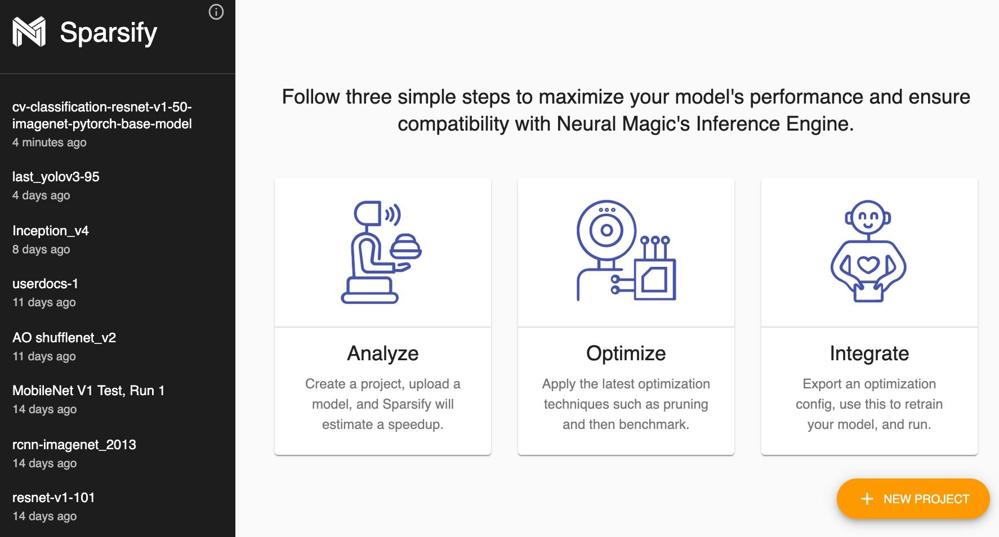

Installing and Launching Sparsify
To install Sparsify, run:
pip install sparsify
To launch Sparsify, type the following command:
sparsify
Optionally, you can run
sparsify
-h
to get more options.
From the Start screen, you can

Start a new project
The New Project button initiates the start of a new project during which you will analyze, optimize, and integrate your model to maximize performance and ensure compatibility with optionally, Neural Magic’s DeepSparse Engine.
Open an existing project
Projects are listed in a navigation bar (black area) on the left of the Start page. You can create a single or multiple projects for your analysis.
Display additional information
An information
 button is available in the upper right of the navigation bar to display information about Sparsify.
button is available in the upper right of the navigation bar to display information about Sparsify.

Next step…
Go deeper on details with the Sparsify Overview .